腰部固定件使用说明
腰部固定件背景介绍
G1-EDU 机身29自由度版本，腰部有三个自由度，对于大多数用户来讲控制会有一定难度。为此，宇树为您提供了一个腰部固定件，在您不需要控制两个腰部并联关节时，可以通过腰部固定件将这两个并联电机物理锁住，同时在Unitree Explore APP上开启腰部电机锁住功能。详细操作如下文。
物品清单
| 腰部固定件1 | 腰部固定件 2 | 内六角 M5*30 螺钉×2 | 内六角 L 型扳手×1 |
|---|---|---|---|
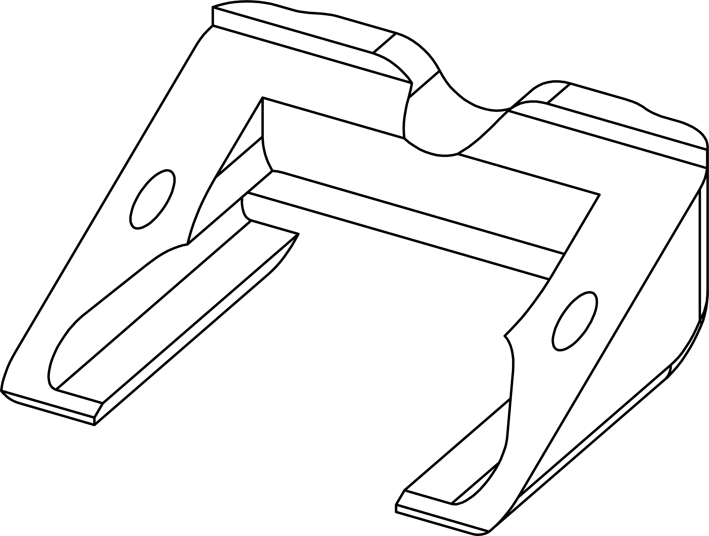 |
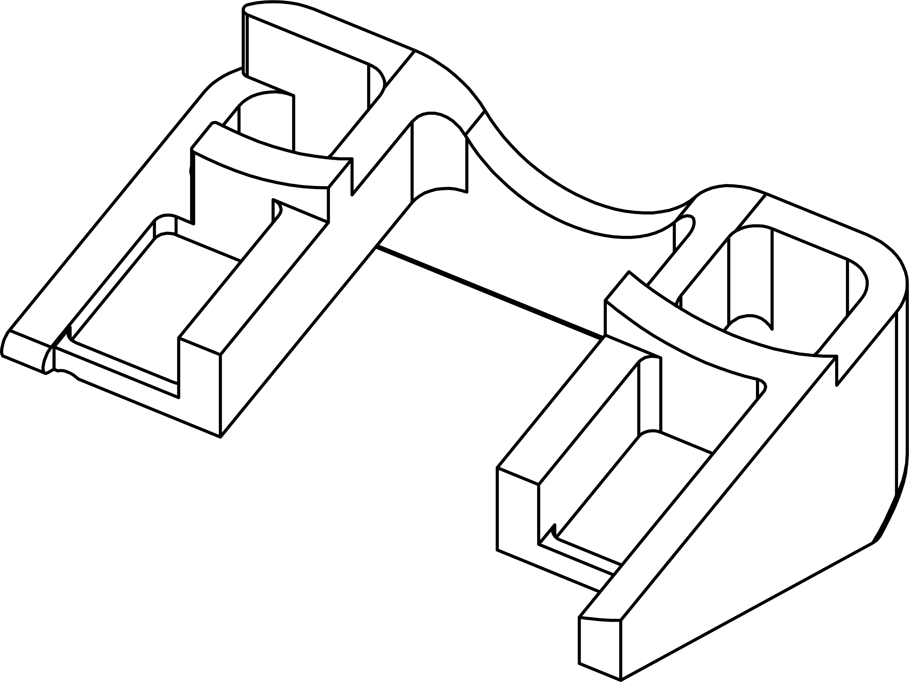 |
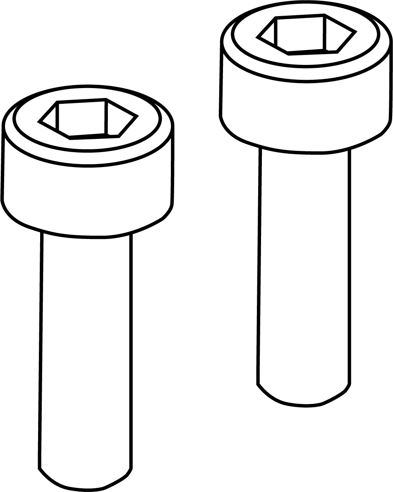 |
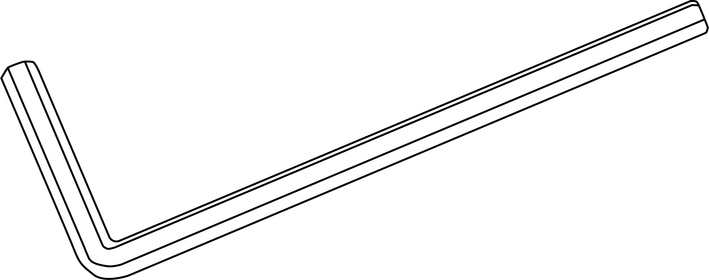 |
| ## 安装说明 |
Step1：安装腰部固定件1
先将G1机身往后倒，将腰部固定件1放置如图所示位置。
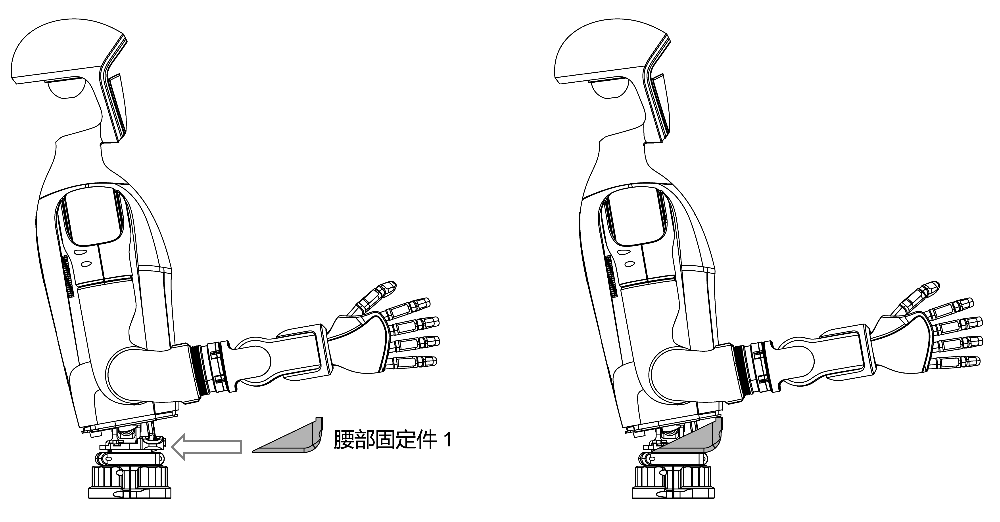
Step2：安装腰部固定件2
腰部固定件1放置好后将G1机身往前倒，将腰部固定件2放置如图所示位置。
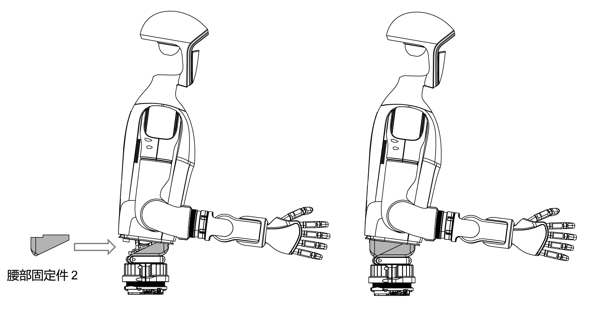
注意！！！
安装腰部固定件时请勿压到腰部线缆，避免损坏线缆造成接触不良。
Step3：固定
使用内六角L型扳手将2颗M5螺钉固定到腰部固定件，随后拧紧。
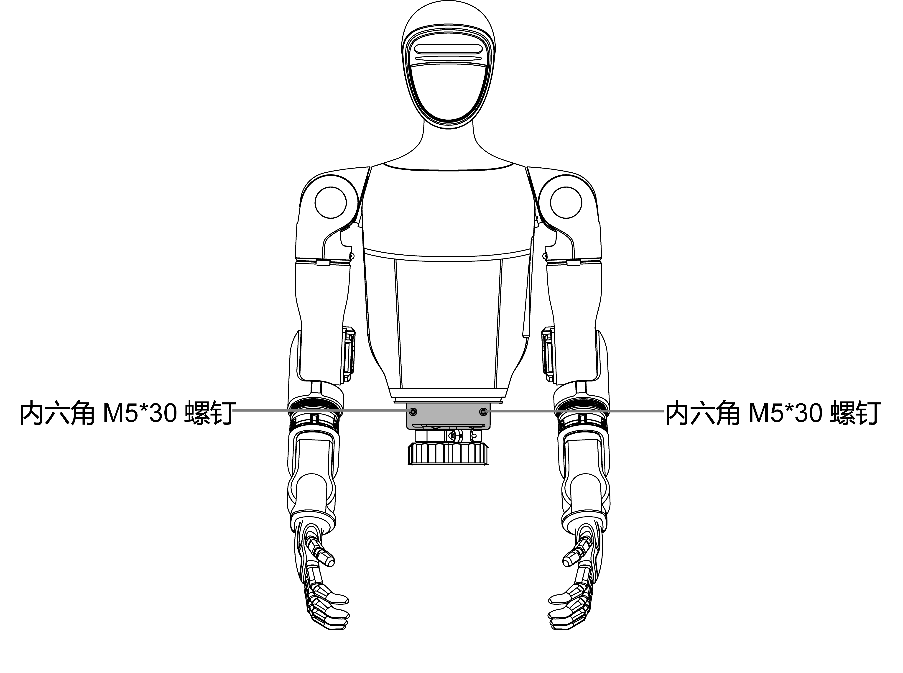
Step4：安装完成
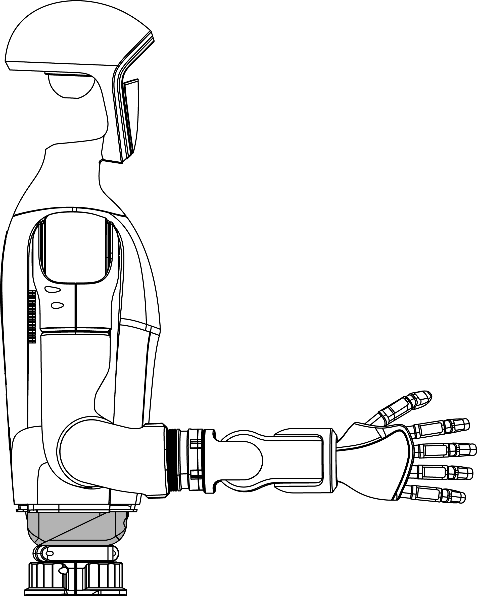
Step5：软件配置
腰部固定件安装完成之后，需要您在Unitree Explore APP【设置】-【机器人】上开启腰部电机锁住功能，如下图所示：
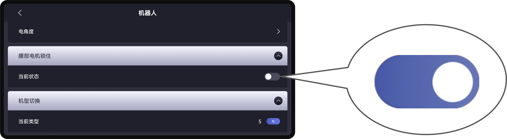
并按照弹窗提示，重启设备。
拆解说明
Step1：取下腰部固定件螺钉
使用内六角L型扳手将2颗M5螺钉从腰部固定件取下。
Step2：取下腰部固定件2
将G1机身往前倒，将腰部固定件2按照如图所示位置取出。
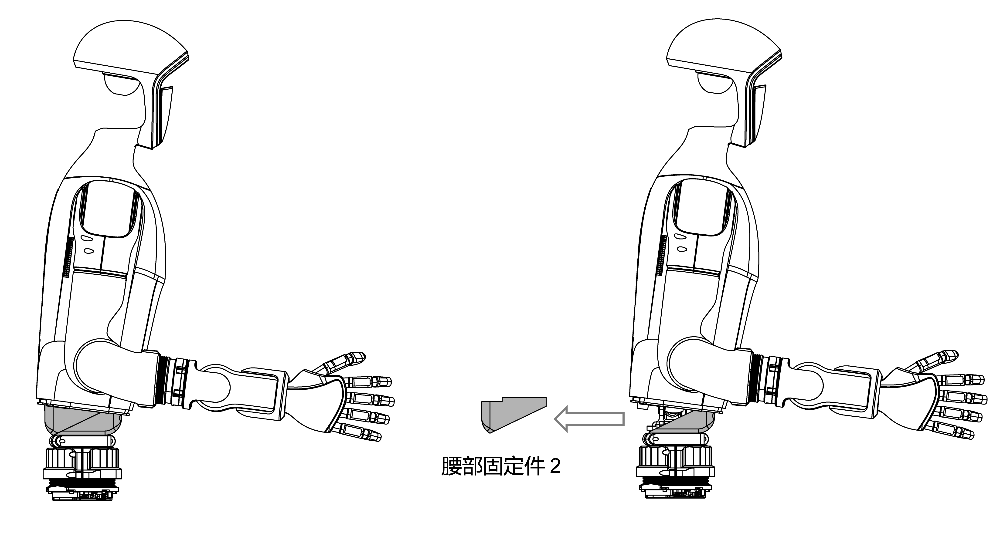
Step3：取下腰部固定件1
先G1机身往后倒，将腰部固定件1按照如图所示位置取出。
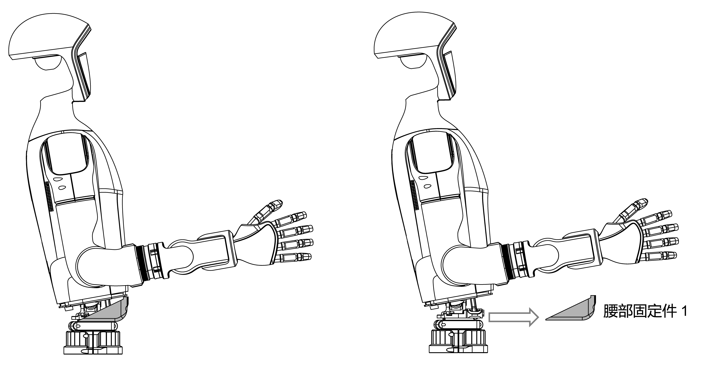
Step4：软件配置
拆装完成之后，需要您在Unitree Explore APP【设置】-【机器人】关闭腰部电机锁住功能，如下图所示：
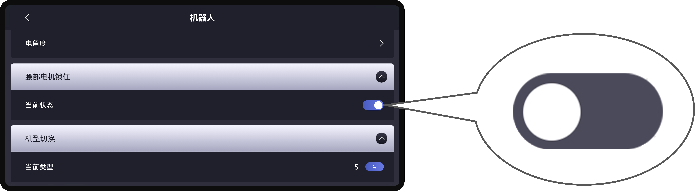
并按照弹窗提示，重启设备。
注意
在锁腰使用过程中，如果您已经对设备27关节电机进行了标定，后续若需要重新解锁腰部固定件，在您解锁完腰部固定件的全部操作后，需要重新标定解锁后的29关节电机。